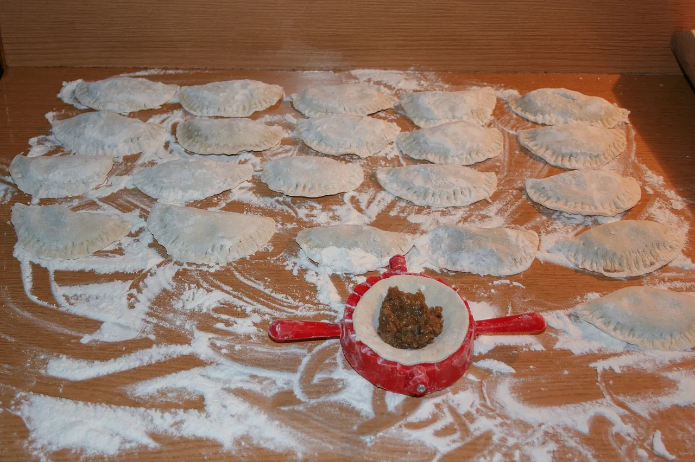
Épicerie polonaise · Morangis (91)
SILESIALes saveurs de Pologne et de Silésie
Un petit coin de Pologne au cœur de l'Essonne : spécialités traditionnelles, produits du quotidien et douceurs de là-bas.
Une épicerie fine polonaise à Morangis
Installée avenue Gabriel Péri, à Morangis, Silesia est une épicerie fine dédiée aux saveurs de Pologne et, tout particulièrement, de Silésie, région du sud-ouest du pays au patrimoine culinaire généreux.
Que vous ayez grandi avec ces saveurs ou que vous les découvriez pour la première fois, vous trouverez chez nous des produits du quotidien comme des spécialités traditionnelles : charcuteries, pierogi, conserves, produits laitiers, douceurs et bien d'autres trésors du garde-manger polonais.
Notre envie : partager une culture, des recettes et des traditions avec les habitants de l'Essonne, et permettre à la communauté polonaise de retrouver, tout près de chez elle, le goût de la maison.
Les saveurs que vous retrouverez chez nous
Des incontournables de la cuisine polonaise aux spécialités silésiennes, un aperçu des familles de produits qui font le garde-manger polonais.
-
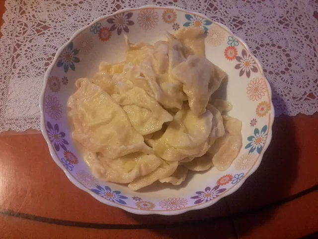
PierogiRaviolis polonais
L'emblème de la cuisine polonaise : pierogi ruskie aux pommes de terre et fromage blanc, à la viande, au chou ou aux champignons.
-
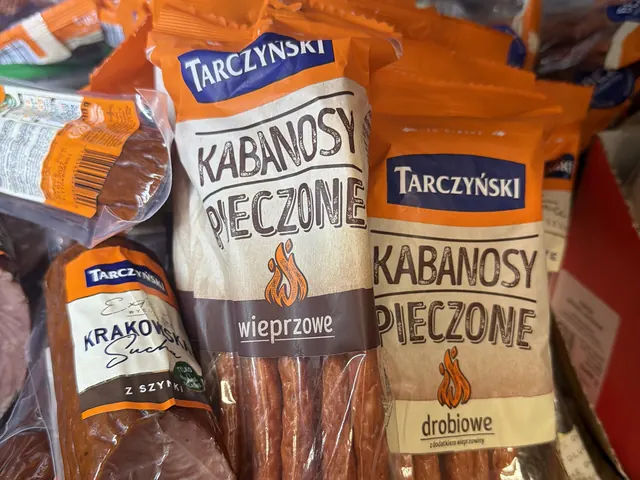
Kiełbasa & kabanosyCharcuteries
Kabanos secs, saucisses fumées et charcuteries polonaises, à grignoter ou à cuisiner.
-
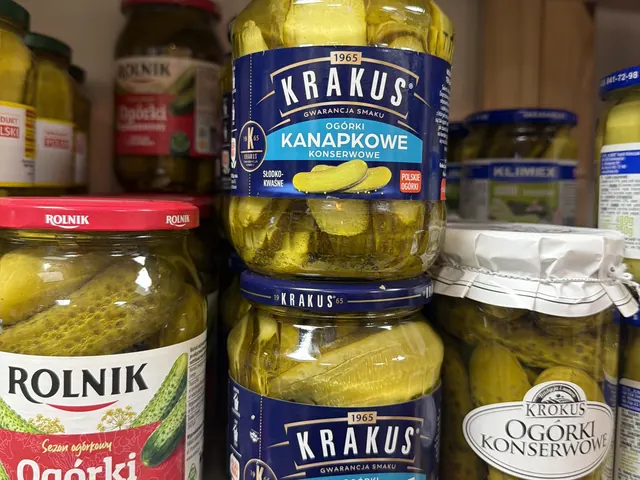
Ogórki & kapusta kiszonaConserves & fermentés
Cornichons, choucroute, betteraves : les grands classiques du garde-manger polonais.
-
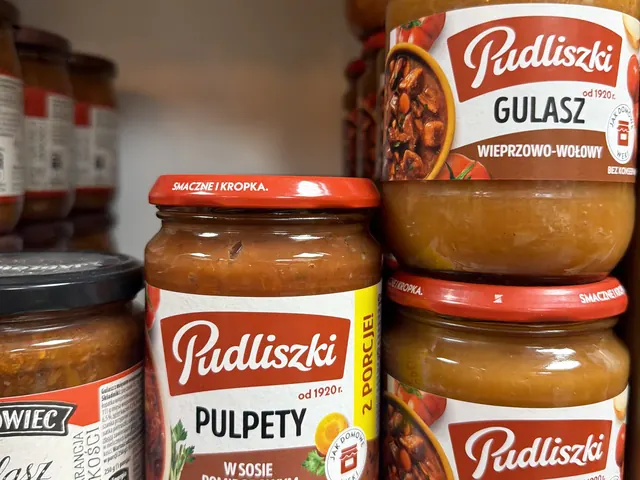
Dania gotowePlats cuisinés
Goulasch, boulettes en sauce (pulpety) et autres plats polonais prêts à réchauffer.
-
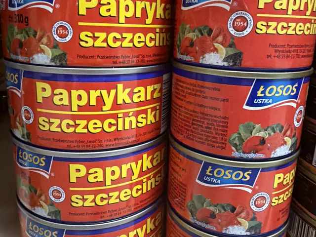
RybyPoissons
Le célèbre paprykarz szczeciński, les sprats fumés en sauce tomate et d'autres conserves de poisson.
-
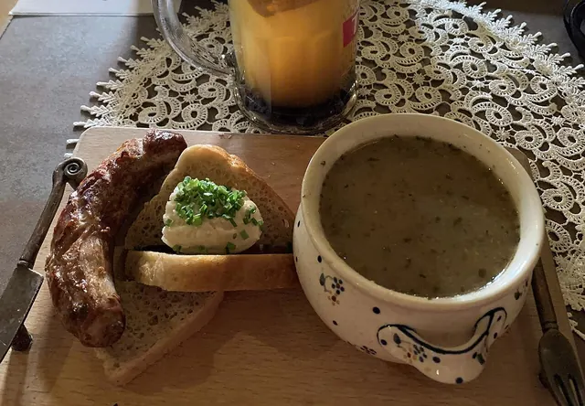
Żurek & barszczSoupes traditionnelles
Le żurek au levain de seigle, le barszcz de betterave et leurs bases pour les cuisiner à la maison.
-
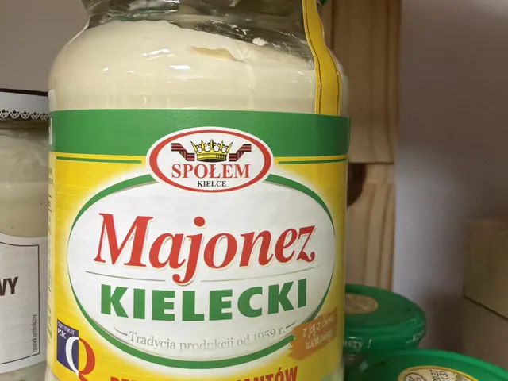
Przyprawy & dodatkiÉpicerie & condiments
La mayonnaise Kielecki, le smalec, les pâtes aux œufs… les saveurs du quotidien.
-
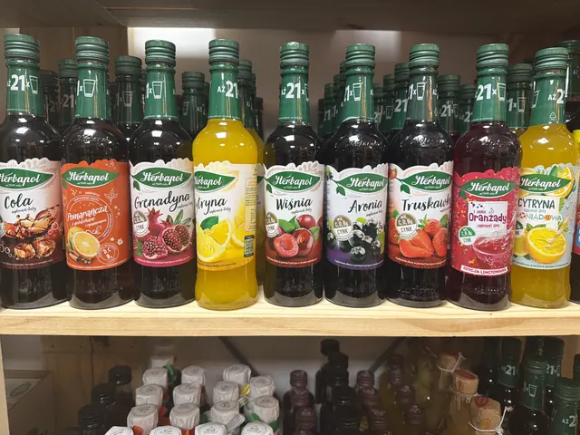
NapojeBoissons
Sirops de fruits Herbapol, jus de betterave et boissons polonaises.
-
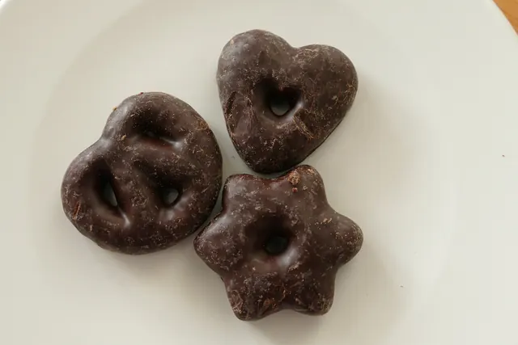
SłodyczeDouceurs & biscuits
Pains d'épices pierniki, chocolats, bonbons et biscuits : les gourmandises qui accompagnent le thé ou le café.
Photos prises dans notre boutique, sauf pierogi, żurek et pierniki (photos d'illustration). L'assortiment évolue au fil des arrivages : demandez-nous conseil en boutique ou suivez nos nouveautés sur Instagram.
La boutique en images
Des rayonnages en bois, un grand choix de produits polonais et un accueil chaleureux : bienvenue chez Silesia, à Morangis.
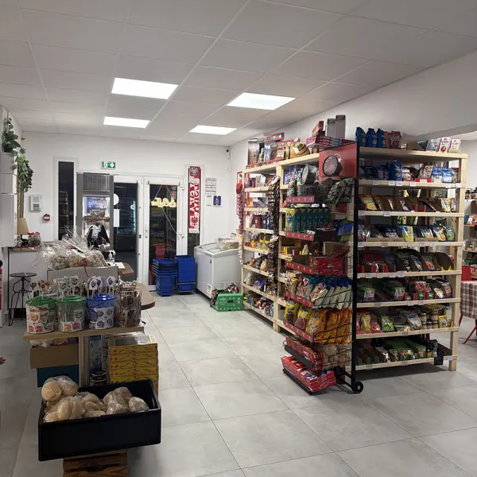
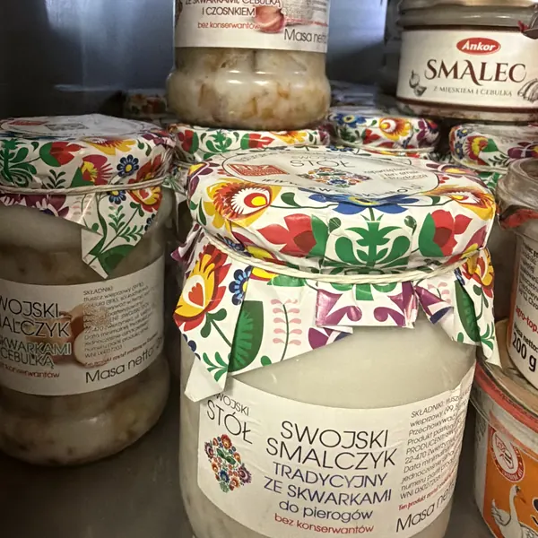
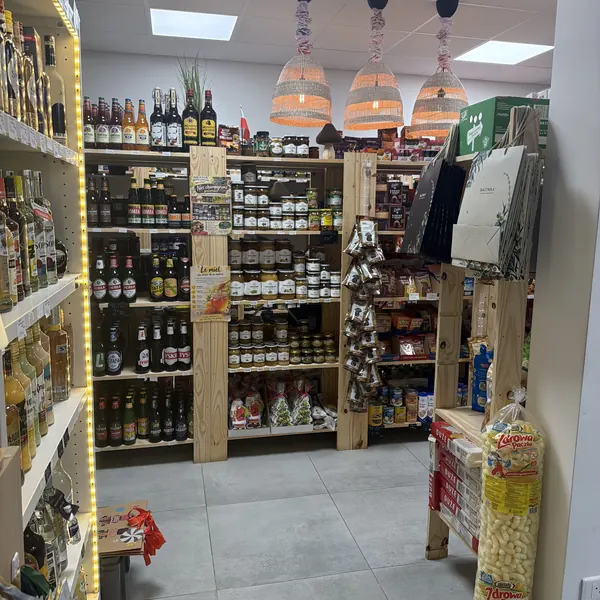
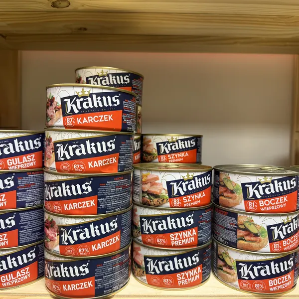
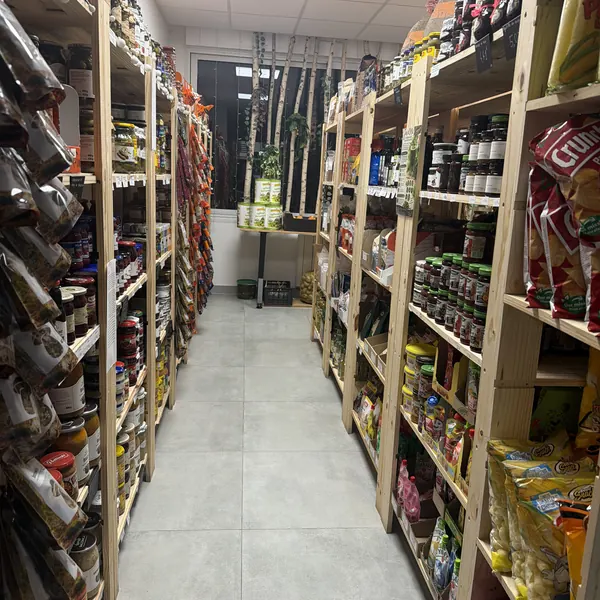
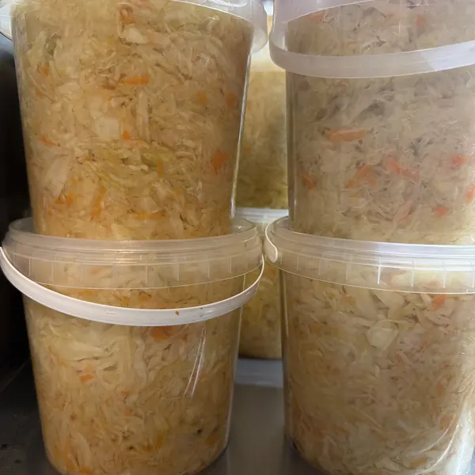
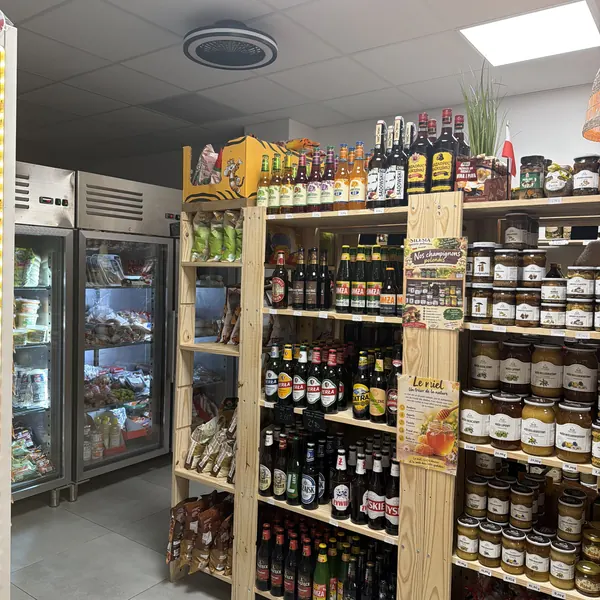
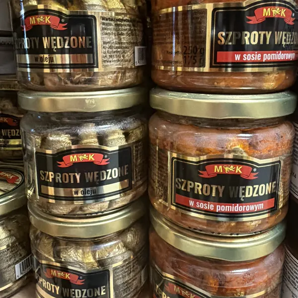
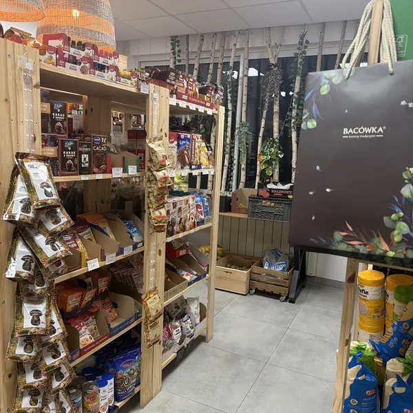
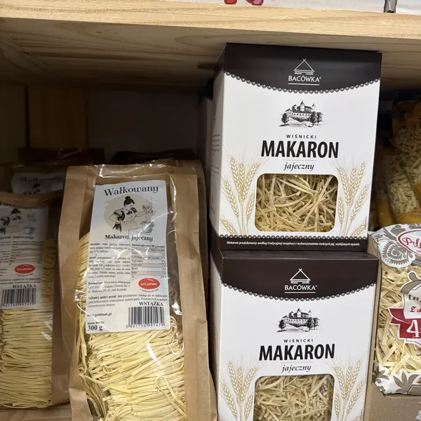
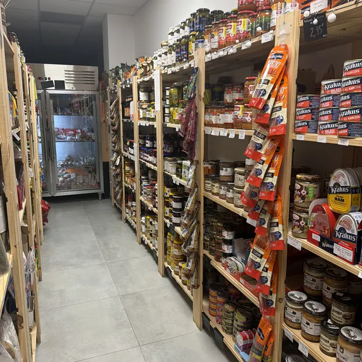
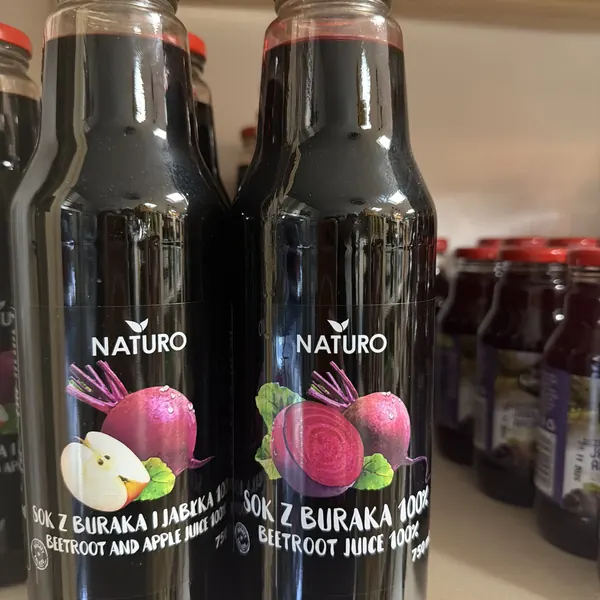


Cliquez sur une photo pour l'agrandir.
Le pain et les gâteaux de la maison Kwapisz
Pour les pains, viennoiseries et gâteaux, Silesia travaille avec Kwapisz, boulangerie-pâtisserie familiale de Bytom, au cœur de la Haute-Silésie. Ses produits arrivent directement de Pologne jusqu'à Morangis.
L'histoire de la maison commence en 1937, lorsque Tadeusz Kwapisz fonde son entreprise à Bytom, l'une des plus anciennes villes de Haute-Silésie. Depuis, le savoir-faire se transmet de génération en génération : c'est aujourd'hui la troisième génération de maîtres boulangers qui dirige l'entreprise familiale.
Pains de toutes sortes, viennoiseries, gâteaux, petits gâteaux et desserts : de quoi retrouver, ici, le goût d'une vraie boulangerie silésienne.
- 1937
Tadeusz Kwapisz fonde sa boulangerie à Bytom, en Haute-Silésie.
- 3 générations
Le savoir-faire familial se transmet de maître boulanger en maître boulanger.
- Aujourd'hui
Les pains, viennoiseries et gâteaux Kwapisz voyagent de Bytom jusqu'à Silesia, à Morangis.
Les nouveautés de la boutique
Arrivages, coups de cœur et idées de recettes : l'actualité de l'épicerie en images.
Suivez-nous sur Instagram
Arrivages, nouveautés et coups de cœur : retrouvez l'actualité de l'épicerie sur notre compte @silesia_epicerie_polonaise_.
Voir nos publications« Un petit coin de Pologne, au cœur de l'Essonne. »
 Histoire
Histoire
Silesia & la Silésie
Pourquoi cette épicerie, et l'histoire d'une région au carrefour de l'Europe : ses mines, ses traditions et sa cuisine.
Lire notre histoire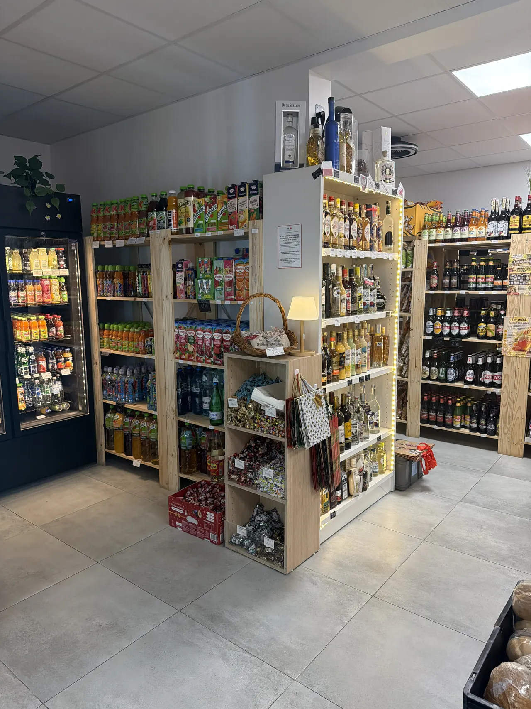
ContactVenez nous voir
Adresse, téléphone, horaires et plan d'accès : tout pour trouver l'épicerie à Morangis.
Nous trouver